Flow
Flow
Hub de domínio KB
KB CRM
CRM Channels
ChannelsMonitoramentoprevisto
SaaS
Apps
Portais
Produtos que se encaixam, num só fluxo
KB.
em desenvolvimento · dados DEMO
Fontes conectores
Página web · mensagem · dataset
parcialsem conector ainda
Registrar fonte operador
Tipo
TrackerRepositórioReuniões
Projeto no tracker
ATL
Namespace
Atlas Vendas já existe
Agenda
Só manual padrão
Toda fonte nasce só manual: nenhum backfill caro começa sem decisão do operador.
Registrarsem editar arquivo de configuração
✓ Tickets ATL alimenta Atlas Vendas
Repositório · snapshot fixado
tag v2.3→commit 7f3a9c1fixadoDEMO
Arquivos elegíveis
✓booking/expiration.service.ts
✓booking/proposal-card.tsx
×dist/bundle.js · lista de exclusão
×docs/manual.pdf · acima do teto de tamanho
export enum BookingStatus {…}enuminterface ExpirationRule {…}interfaceexport class BookingExpiration {classe expireBooking(id) {…}métodoCada símbolo leva assinatura e doc. Componentes de interface também viram símbolo. No modo histórico, o commit vira trechos de diff e se liga ao ticket ATL-142 pelo prefixo.
Barreira de dado pessoal antes de virar passagem
Reunião
‹nome›: a proposta vence no prazo
→ [participante] no lugar do nome
Ticket
comentário com CPF ···.···.···-··
barrado · CPF com dígito verificador
Código
senha = "…"barrado · credencial em texto no código
Commit
Co-authored-by: ‹nome›
→ linha com pessoa removida
Anexo
link assinado com credencial
→ localizador limpo, sem credencial
Pessoa não é conhecimento: autor, responsável e participante nunca entram no grafo.
cartão · chaves · tokenscenso por namespace
quarentenaapagamento auditado
Sincronização · Tickets ATL
agendador único1 run por fonterecolhe órfãos
cursor
1º sync · backfill
só o delta
O cursor só avança depois que o lote foi gravado.
Fila de jobs
Tickets ATL · delta concluído
Reuniões · delta nova tentativa · espera
Artigos ATL · delta fila de falhas
Falha vai para a fila de falhas; a fonte segue.
Prévia sem escrever (dry-run)
tamanho do delta · DEMOcabe no limite · DEMO
Domínios de conhecimento
Atlas organização
tenant declarado · DEMO
Atlas Vendas produto
tenant declarado · DEMO
Atlas Norte implantação
tenant declarado · DEMO
Cada fonte alimenta um namespace
Um artefato pode estar em vários
Liberar a org libera o que está abaixo
Tenant declarado, nunca herdado
namespace · Atlas Vendas artefato em N namespaces
Comentário
ATL-142 · nº 3
Ticket · artefato
ATL-142
Anexo
proposta.pdf
Versão 1
substituída
Versão 2 · atual
embedada
Commit
7f3a9c1 · DEMO
Passagem 1 · versão 2
Passagem 2 · versão 2
Passagem 3 · versão 2
parte de
anexado a
implementa ATL-142
servíveis por versão
Estados da versão
descoberto→
extraído→
fatiado→
embedado
Fatia e embeda só quando o conteúdo muda; os vínculos são reafirmados a cada ingestão; cache por conteúdo. Uma versão também pode ficar parcial, falhar ou ir para quarentena.
Fontes SLO de frescor · DEMOhistórico de runs
FonteNamespaceAgendaÚltimo syncFrescorAção
Tickets ATLAtlas Vendasagendadahoje · DEMOno SLOSync
Artigos ATLAtlasagendadahoje · DEMOno SLOPausar
ReuniõesAtlas Vendasagendadaontem · DEMOacimaSync
Repositório · snapshotAtlas Nortesó manual— · DEMOmanualSync
DocumentosAtlaspausada— · DEMOpausadaRetomar
dentro do SLOacima do SLOmanual ou pausada
Pelo terminal o operador lista, agenda, sincroniza, pausa e retoma cada fonte, e registra fonte nova sem editar configuração.
Runs recentes
Tickets ATL · delta concluído
Reuniões · delta em andamento
Artigos ATL · delta falhou
Fila de falhas (DLQ)
Artigos ATL · delta falhouna fila
depois de novas tentativas com espera
Reprocessar
Campos do tracker, por dados
status → estado canônico
rótulo cru guardado junto
a fazer · em andamento · concluído
atualiza só o que divergiu
Toda fonte, sempre fresca,
sem dado pessoal.
Tickets, artigos, reuniões e código viram conhecimento versionado e citável.
em desenvolvimentodados DEMOHub de domínio · parcialweb, mensagem, dataset · parcial